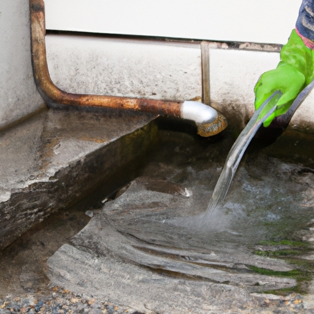

News
Emergency Drain Cleaning
Emergency Drain Cleaning
Clogged drains
Sewer backup
Water damage
Clogged Drains
Clogged Drains
Causes of clogs
DIY solutions
Professional drain cleaning services
Sewer Backup
Sewer Backup
Signs of sewer backup
Risks and health hazards
Remediation and prevention techniques
Water Damage
Water Damage
Effects of water damage
Restoration process
Insurance coverage for water damage
About Us
Contact Us
How to Quickly Unclog Your Drains with Emergency Drain Cleaning Services

How to Quickly Unclog Your Drains with Emergency Drain Cleaning Services
Posted by on 2024-08-19
When you find yourself dealing with a clogged drain, it can be frustrating and inconvenient. The water in your sink or shower may be slow to drain or not draining at all, causing a backup of water and possibly even unpleasant odors. In situations like these, you need a quick solution to unclog your drains and get things flowing smoothly again.
One of the best ways to quickly unclog your drains is by utilizing emergency drain cleaning services. These services are designed to provide fast and effective solutions to clogged drains, helping you avoid further damage and inconvenience. By calling in professionals who specialize in drain cleaning, you can rest assured that your problem will be addressed promptly and efficiently.
Emergency drain cleaning services use specialized tools and techniques to clear out blockages in your pipes. Whether it's hair, grease, soap scum, or other debris causing the clog, these experts have the knowledge and experience to remove it safely without causing any damage to your plumbing system.
In addition to clearing out the clog, emergency drain cleaning services can also help prevent future blockages by identifying any underlying issues that may be contributing to the problem. By addressing these issues early on, you can avoid more serious problems down the line and keep your drains running smoothly for longer.
So if you're dealing with a stubborn clog that just won't budge, don't wait around for it to become a bigger issue. Instead, reach out to emergency drain cleaning services for fast and effective relief. With their expertise and advanced tools, they'll have your drains cleared in no time so you can get back to enjoying a fully functional plumbing system once again.
Previous
Next